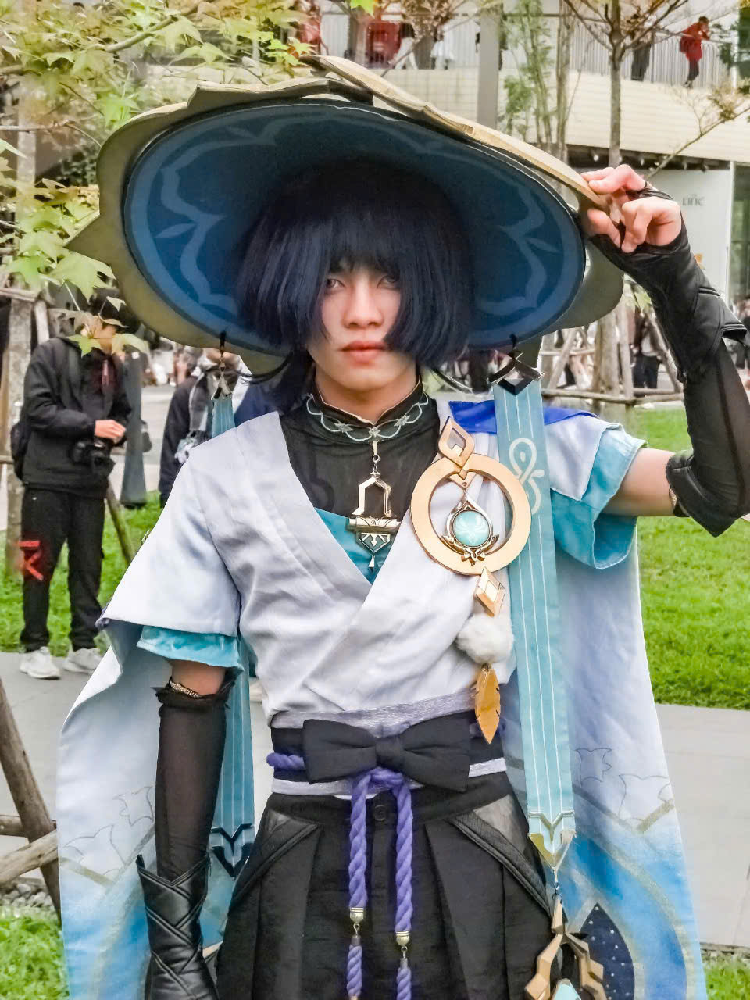

THE REAL KUSANALI
Welcome to my blog !
Now that Nahida is feeling sleepy, I'm here to take over.
My full name is Ha Manh Dung. I go by Dun or Euphoria.
I have just finished my second-year Computer Science at Hanoi University of Science (HUS)
I have a pretty moody personality - sometimes I'm sociable, other times I'm quiet. Honestly, I'm not even sure exactly what I'm like.
I'm quite passionate about game development, but due to certain circumstances, I haven't been able to fully focus on learning lately. As a result, I'm currently pretty weak in coding - even though that's my major at university.I've also been quite busy managing a small YouTube and TikTok channel, along with a little Shopee store of my own - so I guess you could say I enjoy working online. Although student life can get hectic, I still find time during breaks to explore and learn new things.
Interests
Game development is something I'm still genuinely interested in. I spent most of my first year working on my first game project, which, unfortunately, failed completely. I ended up falling behind in my studies and had to retake quite a few courses. That experience left me feeling pretty down, and ever since then, I haven't had the motivation to revive that old project or start a new one.
Not many people know this, but I once dreamed of creating a TCG (trading card game) version of Honkai: Star Rail. As a beginner, I ended up failing mostly due to issues with the UI design. Still, I remain curious about the development side of games - things like which engine was used, what language it's written in, how it's optimized, and so on. It made me really happy to learn that the HSR dev team is actually working on a TCG version of the game (maybe as an event or even a permanent feature) - something I also tried to build a year ago.
Right now, after a year of not developing or learning much, I've definitely lost a lot of my technical skills. But if you're ever interested in working with me, don't hesitate to teach me as much as you can - I'd really appreciate it!
Workspace and tools
For studying
VSCode and IntelliJ are still the two main tools I use for studying coding - related subjects. I haven't done much coding this year, so I haven't really used any other software.
For editing
When I first started out as a content creator on YouTube and TikTok, I regularly used CapCut for video editing. But over time, it started becoming more and more unreasonable. For example, features like audio extraction were restricted, and - believe it or not - even exporting videos now requires a Pro subscription. As I'm writing this blog, I still can't get over how ridiculous that is.
As of now, these are the tools I use for content creation and editing:
- Adobe After Effects 2023 : A powerful editing software — but I actually had to upgrade my PC's RAM once just out of fear that this program might devour my entire computer lol.
- Canva: A quick and simple tool for creating thumbnails and logos. I really enjoy using it.
- Adobe Photoshop: I've used it a few times for photo editing and creating thumbnails. It's definitely a powerful tool, but I guess I'm a bit slow at learning it, so I'm still not very proficient with Photoshop.
- YouTube video download websites: Since YouTube doesn't allow high-quality video downloads, I have to rely on third-party websites to download videos as resources for editing.
- Weight.ai: A fun and free tool that mimics anime character voices. I use it quite often for voiceovers - mainly because my own voice isn't all that great.
- ChatGPT, Gemini, etc.: I use them to check for typos, generate scripts, and help plan content. They've been pretty reliable so far.
Hobbies
Gaming 🎮
Genshin Impact, Honkai Star Rail, Honor of Kings
Watching 📺
Esport tournaments, especially AOG (Arena of Glory), RPL (Realm Pro League), GCS (Garena Challenge Season) and KPL (King Pro Leaguae). I also watch rom-com anime
Music🎶
US-UK music, orchestra
Memes
I'm a newbie in meme world but careful - I've got a talent for making people laugh with memes I collected from the Internet when they least expect it!
